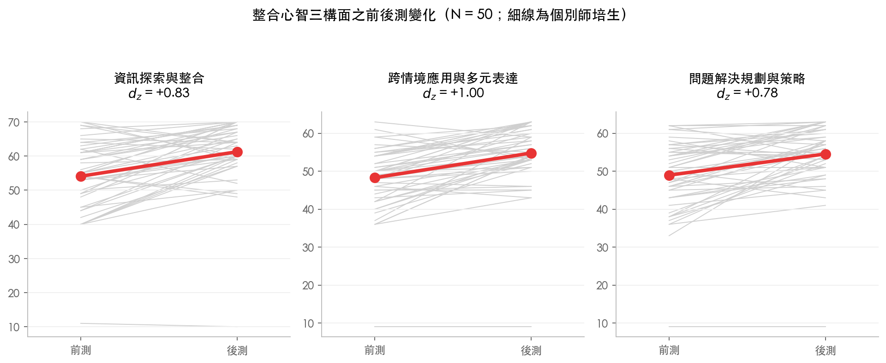

03 研究發現
心態提升了，能動性讀得出來，兩者卻沒有走在一起
整合心智以課程前後測問卷測量，共享能動性由同儕回饋論述辨識。兩份資料以學號串接後，可就 45 位師培生同時取得兩項指標。

整合心智以課程前後測問卷測量，共享能動性由同儕回饋論述辨識。兩份資料以學號串接後，可就 45 位師培生同時取得兩項指標。
兩項構念各自採用最適合它的資料，而非一律問卷或一律語料。
整合心智屬個人層次的心理特質，以課程前後測問卷測量，含資訊探索與整合、跨情境應用與多元表達、問題解決規劃與策略三個構面，前後測各 50 位師培生完整作答，以成對樣本 t 檢定分析。
共享能動性展現於成員是否主動對社群知識物件提出質疑並貢獻可改進的想法，這些動作留存於論述之中，因此直接由語料辨識。九個編碼分屬反思依據、知識翻新行動與調適取向三個功能層次；在一位師培生所有由反思依據出發的連結中，連向批判性提問或具體策略建議者所占的比例，記為證據導向能動性比率，其餘則連向情感支持。
論述端的分析單位為個別師培生（N = 48），連結於各回饋脈絡內以累積視窗計算，經球面正規化後轉為相對組成。問卷與論述兩份資料以學號串接，45 位師培生兩者兼具。
資訊探索與整合由 54.10 升至 61.26（dz = +0.83），跨情境應用與多元表達由 48.30 升至 54.80（dz = +1.00），問題解決規劃與策略由 48.96 升至 54.56（dz = +0.78）。三者的成對樣本 t 檢定 p 值均小於 .001，改以不假設常態的 Wilcoxon 檢定亦得到相同結論。
三構面總分由 151.36 升至 170.62，效果量 dz = +0.95。

48 位師培生的證據導向能動性比率平均為 .75（SD = .13）：援引學生的學習表現時，該證據平均有四分之三接到批判性提問或具體策略建議。比率最低者僅 .18，最高者達 .86。
以整體網絡計算，證據連向質疑與建議的權重占比（M = .224）與證據連向情感支持的權重占比（M = .078）之間，相關為 r = −.795（p < .001）。證據多半只走其中一條路，能動與關係性維繫呈現彼此排擠的關係。

本計畫原先預期具備整合心智者較能推動社群展現共享能動性。以學號串接兩份資料後，45 位師培生的後測整合心智總分與證據導向能動性比率之相關為 r = −.20（95% 信賴區間 [−.46, +.10]，p = .198），未達顯著，方向且與預期相反。改以前測分數、進步分數或三個分構面分別計算，結果一致（所有 |r| 均小於 .29）。控制回饋書寫量後之偏相關為 −.29。
須說明的是，本樣本在 α = .05、檢定力 .80 之下僅能偵測到 r ≥ .41 的相關；若母體相關實為 .30，本樣本偵測到的機率僅約五成。因此本結果宜讀為「未能偵測到關聯」，而非「兩者確實無關」。

心態的成長不會自動轉成社群裡的能動行為。
個人層次的整合心智明顯提升，社群層次的能動性卻與之無關，這指向一項課程設計上的意涵：若期待師培生在社群中對他人的教學提出質疑並貢獻改進，僅培養其個人心態並不足夠，仍需在互動的結構上直接安排。
本課程階段五的兩道反思提問只要求提出問題與給出建議，回饋者因而可以跳過問題的標定，直接給做法或直接給肯定。建議在兩者之間插入落差陳述：先問觀察到哪些學生的具體表現，再問這些表現與該組的教學預期有何差異、對其教學設計假設意味著什麼，最後維持原有的「請提供一項具建設性的建議」。改寫一份表單幾乎沒有成本，卻等於由課程設計代替回饋者承擔提出質疑的責任。
兩份資料的性質不同，不宜等量齊觀。整合心智為自陳量表，測得者為師培生對自身狀態的認知；共享能動性為論述指標，測得者為其實際的回饋行為。兩者未見關聯，可能反映構念本身確實獨立，也可能反映自陳與行為之間的一般性落差。
本計畫亦曾嘗試由論述辨識整合心智，未能成立。跨層次連結占比在 48 人之間幾乎沒有變異（變異係數 .012），屬編碼架構本身的性質；改以三橋均勻度或編碼涵蓋數計算者，與回饋書寫量的相關達 .61 與 .78，實質上測到的是書寫多寡。整合心智因此僅以問卷測量。
共享能動性指標受書寫量影響。證據導向能動性比率與總編碼數的皮爾森相關為 .52，等級相關為 .28（p = .055）。前後測問卷為單組前後比較，無對照組，提升幅度無法排除課程以外因素與重複施測效應。
樣本數限制如發現 03 所述；本研究為橫斷與單組設計，無法確認因果方向。